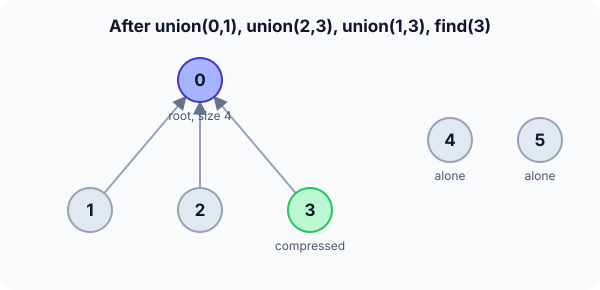

Prerequisites
- Arrays and recursion.
- Trees: each group is stored as a tree (see Binary tree basics).
- The idea of connected components (see DFS).
The analogy
Everyday analogy
Think of clubs where each club has one president. To check whether two people are in the same club, ask each of them "who is your president?" and compare.
To merge two clubs, one president simply agrees to report to the other. Union-Find stores exactly that: each person points to someone higher in their club, up to the president (the root).
How it works
Notation: p[x] is x's parent; a root has p[x] == x. size[r] is the number of elements under root r.
Start with a sequence of operations by hand
Start with p = [0, 1, 2, 3, 4, 5], all sizes 1. union(a, b) links the smaller tree's root under the bigger one (ties: b under a). Predict, then open "Check".
Example: predict before you read
Step 1. union(0, 1), then union(2, 3). Predict p.
Check
Ties, so 1 goes under 0 and 3 under 2: p = [0, 0, 2, 2, 4, 5]. Sizes of roots 0 and 2: 2 each.
Step 2. Cover the next line and guess: union(1, 3). Which roots are found, and which goes under which?
Check
find(1) = 0 and find(3) = 2. Sizes tie, so root 2 goes under root 0: p[2] = 0, size[0] = 4.
Step 3. find(3). Predict the path and what path compression changes.
Check
Path 3 → 2 → 0, root 0. Compression points 3 straight at 0: p[3] = 0. Is 0 connected to 3? Yes, same root. Is 4? No, its root is 4.

Quick recall: Before reading further, cover the text above and say out loud: how do you tell whether two elements are in the same set?
Check your answer
Find the root of each by following parent pointers; they're in the same set exactly when the roots are equal.
Finish the picture: counting groups
Continue from the state above.
- How many groups are there? Predict by counting roots.
Check
Three: roots 0, 4 and 5 (every element with
p[x] == x). - union(4, 5), then union(5, 0). Predict the number of groups after each.
Check
Two after union(4, 5), then one. Root 4 (size 2) goes under root 0 (size 4).
Quick recall: Without scrolling up, say out loud: what does path compression do?
Check your answer
During a find, it makes every vertex on the path point directly to the root, so later finds are shorter.
The rule in plain words
find(x): follow parents up to the root, then make every node on the way point straight to it (path compression).
union(a, b): find both roots; if different, put the smaller tree's root under the bigger one (union by size).
Quick recall: Before you read the code, write union by size in your own words. Then check below.
Check your answer
1. Find both roots. 2. If they are the same, stop. 3. Otherwise put the smaller tree's root under the bigger one and add the sizes.
The code
Read this code after you have done the operations by hand. It will make more sense.
int find(int p[], int x) { /* with path compression */
if (p[x] != x) p[x] = find(p, p[x]); /* point straight at the root */
return p[x];
}
void unite(int p[], int size[], int a, int b) { /* union by size */
a = find(p, a); b = find(p, b);
if (a == b) return; /* already in the same set */
if (size[a] < size[b]) { int t = a; a = b; b = t; }
p[b] = a; /* smaller tree under the bigger root */
size[a] += size[b];
}Definition
What you just did, in one line: Union-Find (a disjoint-set structure) keeps elements in non-overlapping groups, each stored as a tree with a root, and supports find (which group?) and union (merge two groups).
graph BT
1((1)) --> 0((0))
2((2)) --> 0
3((3)) --> 0
4((4))
5((5))
How fast is it?
Quick recall: Before looking at the formula, predict: without either trick, how tall can a tree get after $n$ unions?
Check your answer
$n - 1$, a chain, making each find $O(n)$.
With both union by size and path compression, a sequence of $m$ operations on $n$ elements costs:
$$O\big(m \, \alpha(n)\big), \qquad \alpha(n) \le 4 \text{ for any } n \text{ you will ever meet}$$$\alpha$ is the inverse Ackermann function, which grows unimaginably slowly. With union by size alone, trees stay at height $O(\log n)$.
| Version | find / union cost | Why |
|---|---|---|
| No tricks | $O(n)$ worst case | Trees can become chains |
| Union by size only | $O(\log n)$ | A tree's height grows only when its size doubles |
| Both tricks | $O(\alpha(n))$ amortized | Paths are flattened as they are used |
| Space | $O(n)$ | Parent and size arrays |
Warning
Union-Find can only merge groups. It cannot split a group or delete an edge; for that you need other structures.
Exam tip
Name both optimisations and what each prevents: union by size stops tall trees; path compression flattens paths during finds. Together: amortized $O(\alpha(n))$, "practically constant".
Common mistakes
- Linking
p[a] = bwith the original elements instead of their roots, which breaks the trees. - Forgetting to update the size of the new root.
- Comparing
p[a] == p[b]instead offind(a) == find(b): parents may differ while roots match.
Try it yourself
Exercise 1 (warm-up)
Starting fresh with 4 elements, do union(0, 1), union(2, 3), union(0, 3). How many groups remain, and what is find(2)?
Hint
Work with roots and sizes.
Answer
One group. After union(0, 3), root 2 goes under root 0, so find(2) = 0.
Exercise 2 (a bit harder)
Use Union-Find to count the islands in a grid where land cells 1 touch up/down/left/right: rows 1 1 0, 0 1 0, 0 0 1. How many islands? Write your answer down before you open it.
Show answer
Union each land cell with its land neighbours: (0,0)–(0,1)–(1,1) form one group; (2,2) is alone. Count the roots among land cells: 2 islands.
Did you know?
Did you know?
Robert Tarjan proved in 1975 that the $\alpha(n)$ bound is tight: Union-Find is one of the rare structures whose exact complexity involves the inverse Ackermann function.
Image editors use it to find connected regions for the "magic wand" tool, and Kruskal's algorithm uses it to check for cycles.
Key points to remember
If you remember one thing from each line, remember the because.
- Same root means same group because each group is one tree with one root.
- Union by size keeps trees short because the smaller tree goes under the bigger one, so heights grow only slowly.
- Path compression speeds up later finds because every node on a path is linked straight to the root.
- Operations are almost $O(1)$ because together the two tricks give $O(\alpha(n))$, at most about 4.
- Groups can only merge because the structure has no way to undo a link.
Self-check questions
Answer these in order, out loud. They follow the page, so your answers become the script of your video.
- How is Union-Find like clubs with presidents?
Sample answer
Two people are in the same club if they have the same president; merging clubs means one president agrees to report to the other.
- Walk through union(0, 1), union(2, 3), union(1, 3) and then find(3).
Sample answer
p becomes [0, 0, 2, 2, 4, 5]; union(1, 3) links root 2 under root 0; find(3) goes 3 → 2 → 0 and then sets p[3] = 0.
- Why does
unitecallfindon both arguments first?A good answer says what must be linked.
Sample answer
Only roots can be linked. Linking the original elements would attach part of a tree and leave the rest of the group behind.
- So what is Union-Find, in one sentence?
Sample answer
A structure that keeps disjoint groups as trees and answers "same group?" and "merge these groups" in almost constant time.
- Why does union by size keep the trees short?
A good answer looks at when a node gets deeper.
Sample answer
A node only gets one level deeper when its tree is put under a tree at least as big, so its tree at least doubles each time; that can happen at most $\log_2 n$ times.
- What do find and union cost with and without the two tricks?
Sample answer
Without: up to $O(n)$. Union by size: $O(\log n)$. Both tricks: amortized $O(\alpha(n))$, effectively constant.
- Where is Union-Find used?
Sample answer
Kruskal's minimum spanning tree, cycle detection in undirected graphs, counting connected components and grouping pixels in images.
- If you had to teach this to a friend in 2 minutes, what would you leave out, and why?
Sample answer
I'd leave out the Ackermann function and the proof. I'd keep the club-president analogy, the three unions and one find, and "find the root, link roots, two tricks make it nearly constant".
External resources
- VisuAlgo: Union-Find disjoint sets: animate unions and path compression.
- CP-Algorithms: Disjoint set union: both optimisations and applications.
- Wikipedia: Disjoint-set data structure: history and the $\alpha(n)$ analysis.
Videos
- YouTube search: Union-Find with path compression: pick a short walkthrough.